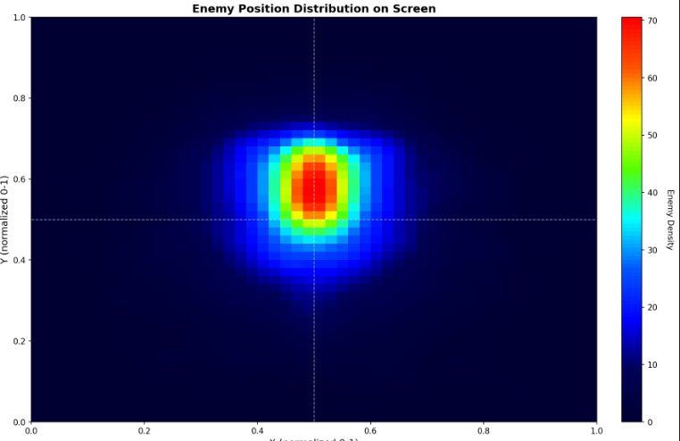
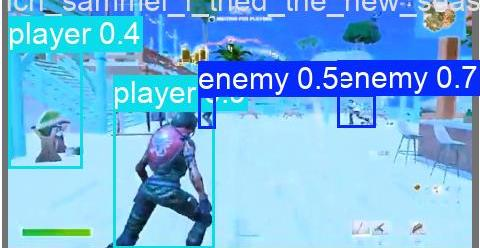

<!DOCTYPE html>
<html lang="de">
<head>
    <meta charset="UTF-8" />
    <meta name="viewport" content="width=device-width, initial-scale=1.0" />
    <title>Enemy Detection System - Abschlusspräsentation</title>

    <script crossorigin src="https://unpkg.com/react@18/umd/react.production.min.js"></script>
    <script crossorigin src="https://unpkg.com/react-dom@18/umd/react-dom.production.min.js"></script>
    <script src="https://unpkg.com/@babel/standalone/babel.min.js"></script>
    <script src="https://cdn.tailwindcss.com"></script>
    <link href="https://fonts.googleapis.com/css2?family=JetBrains+Mono:wght@400;700&family=Inter:wght@400;600;700;900&display=swap" rel="stylesheet">

    <script>
        tailwind.config = {
            theme: {
                extend: {
                    fontFamily: {
                        sans: ['Inter', 'sans-serif'],
                        mono: ['JetBrains Mono', 'monospace'],
                    },
                    animation: {
                        'fade-in': 'fadeIn 0.45s ease-out',
                        'fade-in-down': 'fadeInDown 0.45s ease-out',
                    },
                    keyframes: {
                        fadeIn: {
                            '0%': { opacity: '0' },
                            '100%': { opacity: '1' },
                        },
                        fadeInDown: {
                            '0%': { opacity: '0', transform: 'translateY(-10px)' },
                            '100%': { opacity: '1', transform: 'translateY(0)' },
                        }
                    }
                }
            }
        }
    </script>

    <style type="text/tailwindcss">
        @layer utilities {
            .text-shadow {
                text-shadow: 0 2px 4px rgba(0,0,0,0.45);
            }
        }
        body {
            background:
                radial-gradient(circle at top, rgba(127, 29, 29, 0.34), transparent 42%),
                linear-gradient(180deg, #1a0606 0%, #09090b 100%);
            color: #f5f5f4;
        }
    </style>
</head>
<body>
    <div id="root"></div>

    <script type="text/babel">
        const { useState, useEffect } = React;

        const Icon = ({ children, size = 24, className = "" }) => (
            <svg
                xmlns="http://www.w3.org/2000/svg"
                width={size}
                height={size}
                viewBox="0 0 24 24"
                fill="none"
                stroke="currentColor"
                strokeWidth="2"
                strokeLinecap="round"
                strokeLinejoin="round"
                className={className}
            >
                {children}
            </svg>
        );

        const ChevronRight = (props) => <Icon {...props}><polyline points="9 18 15 12 9 6"></polyline></Icon>;
        const ChevronLeft = (props) => <Icon {...props}><polyline points="15 18 9 12 15 6"></polyline></Icon>;
        const Target = (props) => <Icon {...props}><circle cx="12" cy="12" r="10"/><circle cx="12" cy="12" r="6"/><circle cx="12" cy="12" r="2"/></Icon>;
        const Gamepad2 = (props) => <Icon {...props}><line x1="6" x2="10" y1="12" y2="12"/><line x1="8" x2="8" y1="10" y2="14"/><line x1="15" x2="15.01" y1="13" y2="13"/><line x1="18" x2="18.01" y1="11" y2="11"/><rect width="20" height="12" x="2" y="6" rx="2"/></Icon>;
        const BarChart3 = (props) => <Icon {...props}><path d="M3 3v18h18"/><path d="M18 17V9"/><path d="M13 17V5"/><path d="M8 17v-3"/></Icon>;
        const Database = (props) => <Icon {...props}><ellipse cx="12" cy="5" rx="9" ry="3"/><path d="M21 12c0 1.66-4 3-9 3s-9-1.34-9-3"/><path d="M3 5v14c0 1.66 4 3 9 3s9-1.34 9-3V5"/></Icon>;
        const Terminal = (props) => <Icon {...props}><polyline points="4 17 10 11 4 5"/><line x1="12" x2="20" y1="19" y2="19"/></Icon>;
        const Cpu = (props) => <Icon {...props}><rect x="4" y="4" width="16" height="16" rx="2"/><rect x="9" y="9" width="6" height="6"/><path d="M9 1v3"/><path d="M15 1v3"/><path d="M9 20v3"/><path d="M15 20v3"/><path d="M20 9h3"/><path d="M20 14h3"/><path d="M1 9h3"/><path d="M1 14h3"/></Icon>;
        const Layers = (props) => <Icon {...props}><polygon points="12 2 2 7 12 12 22 7 12 2"/><polyline points="2 17 12 22 22 17"/><polyline points="2 12 12 17 22 12"/></Icon>;
        const MonitorPlay = (props) => <Icon {...props}><path d="m10 7 5 3-5 3Z"/><rect width="20" height="14" x="2" y="3" rx="2"/><path d="M12 17v4"/><path d="M8 21h8"/></Icon>;
        const ScanEye = (props) => <Icon {...props}><path d="M3 7V5a2 2 0 0 1 2-2h2"/><path d="M17 3h2a2 2 0 0 1 2 2v2"/><path d="M21 17v2a2 2 0 0 1-2 2h-2"/><path d="M7 21H5a2 2 0 0 1-2-2v-2"/><circle cx="12" cy="12" r="1"/><path d="M5 12s2.5-5 7-5 7 5 7 5-2.5 5-7 5-7-5-7-5Z"/></Icon>;
        const BrainCircuit = (props) => <Icon {...props}><path d="M12 5a3 3 0 1 0-5.997.125 4 4 0 0 0-2.526 5.77 4 4 0 0 0 .556 6.588A4 4 0 1 0 12 18Z"/><path d="M12 5a3 3 0 1 1 5.997.125 4 4 0 0 1 2.526 5.77 4 4 0 0 1-.556 6.588A4 4 0 1 1 12 18Z"/><path d="M15 13a4.5 4.5 0 0 1-3-4 4.5 4.5 0 0 1-3 4"/></Icon>;
        const CheckCircle = (props) => <Icon {...props}><path d="M22 11.08V12a10 10 0 1 1-5.93-9.14"/><polyline points="22 4 12 14.01 9 11.01"/></Icon>;
        const FolderPlus = (props) => <Icon {...props}><path d="M3 7a2 2 0 0 1 2-2h3l2 2h9a2 2 0 0 1 2 2v8a2 2 0 0 1-2 2H5a2 2 0 0 1-2-2Z"/><path d="M12 11v6"/><path d="M9 14h6"/></Icon>;

        const card = "bg-gradient-to-br from-stone-900 to-slate-950 p-6 rounded-xl border border-rose-950/70 shadow-lg";

        const slides = [
            {
                id: 'title',
                title: 'Enemy Detection System',
                subtitle: 'Abschlusspräsentation - DSAI',
                icon: <Target size={24} />,
                content: (
                    <div className="flex flex-col items-center justify-center h-full space-y-8 text-center">
                        <div className="p-8 bg-rose-500/10 rounded-full ring-4 ring-rose-400/50">
                            <Target size={80} className="text-rose-400" />
                        </div>
                        <div className="space-y-4">
                            <h1 className="text-5xl font-black tracking-tighter text-transparent bg-clip-text bg-gradient-to-r from-rose-400 via-red-400 to-orange-300">
                                ABSCHLUSSPRÄSENTATION
                            </h1>
                            <p className="text-xl text-slate-400 max-w-2xl mx-auto">
                                Von einer einfachen Koordinaten-Regression zu einem hybriden lokalen Workflow für Datensatzerstellung, YOLO-Training, Annotation, Zusammenführen und Testen.
                            </p>
                        </div>
                        <div className="flex items-center space-x-2 text-sm text-slate-500 font-mono mt-12">
                            <Terminal size={14} />
                            <span>HTL Donaustadt | Enemy-Detection-Projekt</span>
                        </div>
                    </div>
                )
            },
            {
                id: 'task',
                title: 'Aufgabenstellung',
                subtitle: 'Von der Ursprungsidee zur finalen Richtung',
                icon: <Gamepad2 size={24} />,
                content: (
                    <div className="grid grid-cols-1 md:grid-cols-2 gap-8 h-full items-center">
                        <div className="space-y-6">
                            <div className={card + " border-l-4 border-rose-500"}>
                                <h3 className="text-2xl font-bold text-rose-400 mb-2">Ursprungsidee</h3>
                                <p className="text-slate-300 leading-relaxed">
                                    Den Gegner als einzelnen <span className="text-orange-300 font-bold">(x, y)-Punkt</span> auf dem Bildschirm per Koordinaten-Regression vorhersagen.
                                </p>
                                <span className="font-mono text-sm mt-3 block bg-slate-900 p-2 rounded text-slate-400">Eingabe: Bild -> Ausgabe: Punkt (x, y)</span>
                            </div>
                            <div className={card + " border-l-4 border-red-500"}>
                                <h3 className="text-2xl font-bold text-red-400 mb-2">Finale Richtung</h3>
                                <p className="text-slate-300 leading-relaxed">
                                    Wechsel zu <span className="text-red-400 font-bold">YOLO-Objekterkennung</span> mit Bounding Boxes, Klassen und Confidence-Werten.
                                </p>
                                <span className="font-mono text-sm mt-3 block bg-slate-900 p-2 rounded text-slate-400">Eingabe: Bild -> Ausgabe: Boxen + Klassen + Confidence</span>
                            </div>
                        </div>
                        <div className="relative h-72 md:h-80 bg-slate-900 rounded-xl border border-slate-700 overflow-hidden flex items-center justify-center">
                            <div className="absolute inset-0 bg-[linear-gradient(45deg,transparent_25%,rgba(68,107,158,0.1)_50%,transparent_75%,transparent_100%)] bg-[length:20px_20px]" />
                            <div className="relative z-10 text-center space-y-5">
                                <div className="flex items-center justify-center gap-4">
                                    <div className="px-4 py-2 rounded-lg bg-slate-800 border border-slate-700 font-mono text-red-400">[x, y]</div>
                                    <ChevronRight className="text-slate-500" />
                                    <div className="px-4 py-2 rounded-lg bg-slate-800 border border-slate-700 font-mono text-orange-300">[box, class, conf]</div>
                                </div>
                                <p className="text-slate-400 max-w-md mx-auto">Das Projekt wurde angepasst, weil die ursprüngliche Formulierung das echte Erkennungsproblem nicht zuverlässig abbilden konnte.</p>
                            </div>
                        </div>
                    </div>
                )
            },
            {
                id: 'roadmap',
                title: 'Roadmap',
                subtitle: 'Wie sich unser Ansatz chronologisch verändert hat',
                icon: <Layers size={24} />,
                content: (
                    <div className="flex flex-col h-full gap-6">
                        <div className="bg-slate-900/60 border border-slate-700 rounded-xl p-4">
                            <div className="flex flex-col md:flex-row md:items-center gap-4">
                                <div className="flex items-center gap-3 min-w-0">
                                    <div className="w-11 h-11 rounded-full bg-rose-500/15 border border-rose-400/30 flex items-center justify-center font-bold text-rose-300">1</div>
                                    <div>
                                        <p className="text-[11px] uppercase tracking-[0.25em] text-slate-500 font-mono">Früher</p>
                                        <p className="font-bold text-white">Lineare / Koordinaten-Regression</p>
                                    </div>
                                </div>
                                <div className="flex-1 h-px bg-gradient-to-r from-rose-500/60 via-orange-400/60 to-transparent" />
                                <div className="flex items-center gap-3 min-w-0">
                                    <div className="w-11 h-11 rounded-full bg-orange-500/15 border border-orange-400/30 flex items-center justify-center font-bold text-orange-200">2</div>
                                    <div>
                                        <p className="text-[11px] uppercase tracking-[0.25em] text-slate-500 font-mono">Heute</p>
                                        <p className="font-bold text-white">YOLO Object Detection</p>
                                    </div>
                                </div>
                            </div>
                        </div>

                        <div className="grid grid-cols-1 xl:grid-cols-2 gap-6">
                            <div className={card + " border-t-4 border-rose-500"}>
                                <div className="flex items-center justify-between gap-3 mb-4">
                                    <div>
                                        <p className="text-xs uppercase tracking-widest text-rose-300 font-mono">Phase 1</p>
                                        <h3 className="text-2xl font-bold text-white">Erster Ansatz: Ein Punkt pro Bild</h3>
                                    </div>
                                    <span className="px-3 py-1 rounded-full bg-rose-500/10 text-rose-200 text-xs font-semibold">Linear</span>
                                </div>

                                <div className="grid grid-cols-1 md:grid-cols-[0.78fr_1.22fr] gap-4 items-center">
                                    <div className="space-y-3">
                                        <p className="text-sm leading-relaxed text-slate-300">
                                            Wir starteten bewusst simpel: Das Modell sollte nur einen <span className="text-rose-300 font-semibold">(x, y)</span>-Punkt für die Gegnerposition vorhersagen.
                                        </p>

                                        <div className="bg-slate-900/70 border border-slate-700 rounded-lg p-3">
                                            <div className="text-[11px] uppercase tracking-wider text-slate-500 font-mono mb-1">Warum wir so gestartet sind</div>
                                            <p className="text-sm text-slate-300">Ein Punkt wirkte zuerst leicht zu labeln und direkt als Zielwert trainierbar.</p>
                                        </div>

                                        <div className="bg-slate-900/70 border border-slate-700 rounded-lg p-3">
                                            <div className="text-[11px] uppercase tracking-wider text-slate-500 font-mono mb-1">Ergebnis</div>
                                            <p className="text-sm text-slate-300">Das Modell sagte oft nur einen Mittelwert voraus und war bei mehreren Zielen nicht robust genug.</p>
                                        </div>

                                        <div className="bg-rose-500/10 border border-rose-500/20 rounded-lg p-3">
                                            <div className="text-[11px] uppercase tracking-wider text-rose-300 font-mono mb-1">Erkenntnis</div>
                                            <p className="text-sm text-rose-100">Ein einzelner Punkt beschreibt das Problem zu grob und bildet echte Gegnererkennung nicht sauber ab.</p>
                                        </div>
                                    </div>

                                    <div className="space-y-3">
                                        <div className="relative aspect-[16/10] overflow-hidden rounded-xl border border-slate-700 bg-slate-950">
                                            
                                            <div className="absolute inset-0 bg-gradient-to-t from-slate-950 via-slate-950/20 to-transparent" />
                                            <div className="absolute left-3 right-3 bottom-3 rounded-lg bg-slate-950/85 border border-slate-700 px-3 py-2">
                                                <p className="text-[11px] uppercase tracking-wider text-rose-300 font-mono">Linear Example</p>
                                                <p className="text-sm text-slate-200">Deutlicher Center-Bias statt echter Erkennung</p>
                                            </div>
                                        </div>

                                        <div className="flex flex-wrap gap-2">
                                            <span className="px-2.5 py-1 rounded-full bg-slate-800 border border-slate-700 text-xs text-slate-300">Durchschnittspunkt</span>
                                            <span className="px-2.5 py-1 rounded-full bg-slate-800 border border-slate-700 text-xs text-slate-300">Mehrdeutige Ziele</span>
                                            <span className="px-2.5 py-1 rounded-full bg-slate-800 border border-slate-700 text-xs text-slate-300">Nicht robust</span>
                                        </div>
                                    </div>
                                </div>
                            </div>

                            <div className={card + " border-t-4 border-orange-500"}>
                                <div className="flex items-center justify-between gap-3 mb-4">
                                    <div>
                                        <p className="text-xs uppercase tracking-widest text-orange-300 font-mono">Phase 2</p>
                                        <h3 className="text-2xl font-bold text-white">Zweiter Ansatz: Unser YOLO-Modell</h3>
                                    </div>
                                    <span className="px-3 py-1 rounded-full bg-orange-500/10 text-orange-200 text-xs font-semibold">YOLO</span>
                                </div>

                                <div className="grid grid-cols-1 md:grid-cols-[0.78fr_1.22fr] gap-4 items-center">
                                    <div className="space-y-3">
                                        <p className="text-sm leading-relaxed text-slate-300">
                                            Danach wechselten wir zu YOLO, weil unser Problem eigentlich <span className="text-orange-300 font-semibold">Objekterkennung</span> ist und nicht nur die Schätzung eines einzelnen Punkts.
                                        </p>

                                        <div className="bg-slate-900/70 border border-slate-700 rounded-lg p-3">
                                            <div className="text-[11px] uppercase tracking-wider text-slate-500 font-mono mb-1">Warum YOLO besser passt</div>
                                            <p className="text-sm text-slate-300">Bounding Boxes statt nur ein Punkt, mehrere Objekte pro Bild und visuell sinnvollere Vorhersagen.</p>
                                        </div>

                                        <div className="bg-slate-900/70 border border-slate-700 rounded-lg p-3">
                                            <div className="flex items-center justify-between gap-3 mb-1">
                                                <div className="text-[11px] uppercase tracking-wider text-slate-500 font-mono">Aktuelle Schwäche</div>
                                                <span className="text-xs font-mono text-orange-300">Recall ~ 0.54</span>
                                            </div>
                                            <p className="text-sm text-slate-300">Das Modell ist klar besser, übersieht aktuell aber noch zu viele Gegner.</p>
                                        </div>

                                        <div className="bg-orange-500/10 border border-orange-500/20 rounded-lg p-3">
                                            <div className="text-[11px] uppercase tracking-wider text-orange-300 font-mono mb-1">Erkenntnis</div>
                                            <p className="text-sm text-orange-100">Die neue Problemformulierung ist der richtige Schritt. Jetzt liegt der Fokus auf mehr Recall.</p>
                                        </div>
                                    </div>

                                    <div className="space-y-3">
                                        <div className="relative aspect-[16/10] overflow-hidden rounded-xl border border-slate-700 bg-slate-950">
                                            
                                            <div className="absolute inset-0 bg-gradient-to-t from-slate-950 via-slate-950/15 to-transparent" />
                                            <div className="absolute left-3 right-3 bottom-3 rounded-lg bg-slate-950/85 border border-slate-700 px-3 py-2">
                                                <p className="text-[11px] uppercase tracking-wider text-orange-300 font-mono">YOLO Example</p>
                                                <p className="text-sm text-slate-200">Bounding Boxes machen die Vorhersage direkt sichtbar</p>
                                            </div>
                                        </div>

                                        <div className="flex flex-wrap gap-2">
                                            <span className="px-2.5 py-1 rounded-full bg-slate-800 border border-slate-700 text-xs text-slate-300">Bounding Boxes</span>
                                            <span className="px-2.5 py-1 rounded-full bg-slate-800 border border-slate-700 text-xs text-slate-300">Mehrere Objekte</span>
                                            <span className="px-2.5 py-1 rounded-full bg-slate-800 border border-slate-700 text-xs text-slate-300">Recall noch zu niedrig</span>
                                        </div>
                                    </div>
                                </div>
                            </div>
                        </div>

                        <div className="rounded-xl border border-slate-700 bg-gradient-to-r from-rose-500/10 via-slate-950/80 to-orange-500/10 p-4">
                            <p className="text-[11px] uppercase tracking-[0.3em] text-slate-500 font-mono mb-2">Roadmap-Fazit</p>
                            <p className="text-lg font-semibold text-white">Der echte Fortschritt war nicht nur ein neues Modell, sondern die Umstellung von einem Punkt zu echter Objekterkennung.</p>
                        </div>
                    </div>
                )
            },
            {
                id: 'problem',
                title: 'Kernproblem',
                subtitle: 'Warum die Koordinaten-Regression scheiterte',
                icon: <Target size={24} />,
                content: (
                    <div className="grid grid-cols-1 md:grid-cols-2 gap-8 h-full items-center">
                        <div className="space-y-4">
                            <div className={card + " border-t-4 border-red-500"}>
                                <h3 className="text-xl font-bold text-white mb-2">Regression mittelte Positionen</h3>
                                <p className="text-slate-400 text-sm">Wenn mehrere Ziele oder Ablenkungen sichtbar waren, sagte das Modell oft den Mittelwert statt eines echten Ziels voraus.</p>
                            </div>
                            <div className={card + " border-t-4 border-orange-500"}>
                                <h3 className="text-xl font-bold text-white mb-2">Zentrum-Bias</h3>
                                <p className="text-slate-400 text-sm">Montage-artiges Gameplay lieferte zu viele Beispiele nahe der Bildschirmmitte, dadurch lernte das Modell eine Positions-Abkürzung.</p>
                            </div>
                            <div className={card + " border-t-4 border-pink-500"}>
                                <h3 className="text-xl font-bold text-white mb-2">Third-Person-Verwirrung</h3>
                                <p className="text-slate-400 text-sm">In Fortnite brachte das sichtbare Spieler-Modell zusätzliches Rauschen ein und machte die Punktvorhersage noch unzuverlässiger.</p>
                            </div>
                        </div>
                        <div className="bg-slate-900 p-6 rounded-xl border border-slate-700 h-full flex flex-col justify-center">
                            <h4 className="text-slate-400 uppercase text-xs font-bold mb-5 tracking-wider">Zentrale Erkenntnis</h4>
                            <div className="space-y-5">
                                <div className="p-4 rounded-lg bg-slate-800 border border-slate-700">
                                    <p className="text-slate-300">Das Problem lag nicht nur an der Modellgröße oder an der Bildanzahl.</p>
                                </div>
                                <div className="p-4 rounded-lg bg-rose-500/10 border border-rose-500/20">
                                    <p className="text-rose-200 font-semibold">Das eigentliche Problem war die Kombination aus Daten-Bias und einer ungeeigneten Problemformulierung.</p>
                                </div>
                            </div>
                        </div>
                    </div>
                )
            },
            {
                id: 'analysis',
                title: 'Datenanalyse',
                subtitle: 'Was wir aus dem Datensatz gelernt haben',
                icon: <BarChart3 size={24} />,
                content: (
                    <div className="grid grid-cols-1 md:grid-cols-2 gap-8 h-full items-center">
                        <div className="space-y-6">
                            <h3 className="text-2xl font-bold text-white">Bias-Visualisierung</h3>
                            <ul className="space-y-4">
                                <li className="bg-slate-800/50 p-4 rounded-lg border-l-4 border-rose-500">
                                    <span className="block text-sm text-slate-400 uppercase font-bold">Tool 1</span>
                                    <span className="text-lg font-bold">Streudiagramm</span>
                                    <p className="text-sm text-slate-400">Die Mittelpunkte der Bounding Boxes wurden geplottet, um zu sehen, wo Gegner auf dem Bildschirm auftauchen.</p>
                                </li>
                                <li className="bg-slate-800/50 p-4 rounded-lg border-l-4 border-orange-500">
                                    <span className="block text-sm text-slate-400 uppercase font-bold">Tool 2</span>
                                    <span className="text-lg font-bold">Heatmap</span>
                                    <p className="text-sm text-slate-400">Machte Konzentrationsmuster sichtbar und zeigte, an welchen Stellen der Datensatz schwach war.</p>
                                </li>
                            </ul>
                            <div className="bg-slate-800/30 p-4 rounded-lg border border-slate-700">
                                <h4 className="font-mono text-sm text-slate-500 uppercase mb-2">Fazit</h4>
                                <p className="text-slate-300">Mehr Daten haben das Problem nicht gelöst. Eine bessere Verteilung und die bessere Modellwahl schon.</p>
                            </div>
                        </div>
                        <div className="relative bg-black rounded-lg overflow-hidden aspect-video border-2 border-slate-700 shadow-2xl p-6">
                            <div className="absolute inset-0 bg-gradient-to-t from-slate-950 to-slate-800 opacity-60"></div>
                            <div className="relative h-full w-full">
                                <div className="absolute inset-0 border border-slate-700 rounded"></div>
                                <div className="absolute left-1/2 top-1/2 -translate-x-1/2 -translate-y-1/2 w-44 h-28 rounded-full bg-red-500/25 blur-2xl"></div>
                                {[...Array(18)].map((_, i) => (
                                    <div key={i} className="absolute w-2 h-2 rounded-full bg-red-400 shadow-[0_0_10px_rgba(248,113,113,0.7)]" style={{ left: `${42 + Math.random() * 16}%`, top: `${39 + Math.random() * 18}%` }} />
                                ))}
                                {[...Array(5)].map((_, i) => (
                                    <div key={'e' + i} className="absolute w-2 h-2 rounded-full bg-orange-300/80" style={{ left: `${10 + Math.random() * 75}%`, top: `${8 + Math.random() * 75}%` }} />
                                ))}
                                <div className="absolute bottom-2 left-2 bg-black/70 px-2 py-1 rounded text-xs font-mono text-white">Zentrumslastige Verteilung erkannt</div>
                            </div>
                        </div>
                    </div>
                )
            },
            {
                id: 'architecture',
                title: 'Systemarchitektur',
                subtitle: 'Hybride Pipeline + Desktop-App',
                icon: <Layers size={24} />,
                content: (
                    <div className="flex flex-col h-full space-y-8 justify-center">
                        <div className="grid grid-cols-1 md:grid-cols-2 gap-6">
                            <div className="bg-gradient-to-br from-slate-800 to-slate-900 p-6 rounded-xl border-t-4 border-rose-500 shadow-lg">
                                <h3 className="font-bold text-xl mb-3 flex items-center gap-2"><Cpu size={20} className="text-rose-400" /> Python-Pipeline</h3>
                                <p className="text-sm text-slate-400 leading-relaxed">Übernimmt Videoverarbeitung, Datensatzerstellung, Augmentierung, Balancing, Splitting, Training und CLI-Prediction.</p>
                            </div>
                            <div className="bg-gradient-to-br from-slate-800 to-slate-900 p-6 rounded-xl border-t-4 border-orange-500 shadow-lg">
                                <h3 className="font-bold text-xl mb-3 flex items-center gap-2"><MonitorPlay size={20} className="text-orange-300" /> Electron + React App</h3>
                                <p className="text-sm text-slate-400 leading-relaxed">Stellt die UI für Annotation, Datensatz-Review, Zusammenführen, Trainingssteuerung und Prediction-Tests bereit.</p>
                            </div>
                        </div>
                        <div className="flex items-center justify-between bg-slate-900/50 p-6 rounded-xl border border-slate-700 overflow-x-auto">
                            <div className="flex flex-col items-center min-w-[140px]">
                                <div className="w-24 h-16 bg-slate-800 border-2 border-slate-600 rounded flex items-center justify-center text-xs text-center p-1">Gameplay-Videos</div>
                            </div>
                            <ChevronRight className="text-slate-600" />
                            <div className="flex flex-col items-center min-w-[140px]">
                                <div className="w-24 h-16 bg-rose-900/30 border-2 border-rose-500 rounded flex items-center justify-center text-xs text-center p-1">Python-Verarbeitung</div>
                            </div>
                            <ChevronRight className="text-slate-600" />
                            <div className="flex flex-col items-center min-w-[140px]">
                                <div className="w-24 h-16 bg-orange-900/30 border-2 border-orange-500 rounded flex items-center justify-center text-xs text-center p-1">Desktop-App</div>
                            </div>
                            <ChevronRight className="text-slate-600" />
                            <div className="flex flex-col items-center min-w-[140px]">
                                <div className="w-24 h-16 bg-red-900/30 border-2 border-red-500 rounded flex items-center justify-center text-xs text-center p-1">YOLO-Modell</div>
                            </div>
                        </div>
                        <div className="bg-slate-800/30 p-4 rounded-lg border border-slate-700">
                            <h4 className="font-mono text-sm text-slate-500 uppercase mb-2">Präzise Zusammenfassung</h4>
                            <p className="text-slate-300">Das ist ein hybrider Workflow mit automatischer Vorverarbeitung und optionaler manueller Korrektur, keine vollautomatische Black Box.</p>
                        </div>
                    </div>
                )
            },
            {
                id: 'python',
                title: 'Python-Pipeline',
                subtitle: 'Was das Backend macht',
                icon: <Database size={24} />,
                content: (
                    <div className="grid grid-cols-1 md:grid-cols-2 gap-8 items-start h-full">
                        <div className="space-y-5">
                            <div className="flex items-start gap-4">
                                <div className="bg-rose-500/20 p-3 rounded-lg text-rose-300 font-bold text-xl">1</div>
                                <div>
                                    <h4 className="font-bold text-lg text-white">Videoverarbeitung</h4>
                                    <p className="text-slate-400 text-sm">Extrahiert Frames aus Gameplay-Videos und erzeugt Kandidaten für Erkennungen.</p>
                                </div>
                            </div>
                            <div className="flex items-start gap-4">
                                <div className="bg-rose-500/20 p-3 rounded-lg text-rose-300 font-bold text-xl">2</div>
                                <div>
                                    <h4 className="font-bold text-lg text-white">Datensatzerstellung</h4>
                                    <p className="text-slate-400 text-sm">Speichert Annotationen in einem gemeinsamen Format und exportiert YOLO-Labels und Datendateien.</p>
                                </div>
                            </div>
                            <div className="flex items-start gap-4">
                                <div className="bg-rose-500/20 p-3 rounded-lg text-rose-300 font-bold text-xl">3</div>
                                <div>
                                    <h4 className="font-bold text-lg text-white">Training + Inferenz</h4>
                                    <p className="text-slate-400 text-sm">Trainiert unterstützte YOLO-Backbones, speichert die besten Gewichte und führt CLI-Predictions auf Screenshots aus.</p>
                                </div>
                            </div>
                        </div>
                        <div className="bg-slate-900 p-6 rounded-xl border border-slate-700 h-full flex flex-col">
                            <h4 className="text-slate-400 uppercase text-xs font-bold mb-4 tracking-wider">Wichtige Schritte</h4>
                            <div className="font-mono text-sm space-y-2 text-slate-300">
                                <div className="p-3 rounded bg-slate-800 border border-slate-700">process_video_improved.py</div>
                                <div className="p-3 rounded bg-slate-800 border border-slate-700">augment_dataset_improved.py</div>
                                <div className="p-3 rounded bg-slate-800 border border-slate-700">clean_dataset_remove_bias.py</div>
                                <div className="p-3 rounded bg-slate-800 border border-slate-700">split_dataset.py</div>
                                <div className="p-3 rounded bg-slate-800 border border-slate-700">train.py</div>
                                <div className="p-3 rounded bg-slate-800 border border-slate-700">predict_cli.py</div>
                            </div>
                            <div className="mt-auto pt-4 text-xs text-slate-500 text-center">Die Pipeline unterstützt Automatisierung, Filterung, Augmentierung, Bias-Analyse und YOLO-Export.</div>
                        </div>
                    </div>
                )
            },
            {
                id: 'app',
                title: 'Desktop-App',
                subtitle: 'Annotation, Review, Training, Testen',
                icon: <MonitorPlay size={24} />,
                content: (
                    <div className="space-y-8 h-full flex flex-col justify-center">
                        <div className="grid grid-cols-1 md:grid-cols-3 gap-6">
                            <div className="bg-gradient-to-br from-slate-800 to-slate-900 p-6 rounded-xl border-t-4 border-rose-500 shadow-lg">
                                <h3 className="font-bold text-lg mb-3 flex items-center gap-2"><ScanEye size={20} className="text-rose-400" /> Manueller Collector</h3>
                                <p className="text-sm text-slate-400">Frame-für-Frame-Labeling mit Bounding Boxes für Gegner- und Spielerklassen.</p>
                            </div>
                            <div className="bg-gradient-to-br from-slate-800 to-slate-900 p-6 rounded-xl border-t-4 border-orange-500 shadow-lg">
                                <h3 className="font-bold text-lg mb-3 flex items-center gap-2"><Layers size={20} className="text-orange-300" /> Datensatz-Viewer</h3>
                                <p className="text-sm text-slate-400">Datensatzbilder inspizieren, verschieben, vergrößern, neu labeln, speichern, rückgängig machen oder löschen.</p>
                            </div>
                            <div className="bg-gradient-to-br from-slate-800 to-slate-900 p-6 rounded-xl border-t-4 border-red-500 shadow-lg">
                                <h3 className="font-bold text-lg mb-3 flex items-center gap-2"><Cpu size={20} className="text-red-400" /> Training + Test</h3>
                                <p className="text-sm text-slate-400">Trainingsläufe starten und Modellvorhersagen auf Screenshots direkt in der App testen.</p>
                            </div>
                        </div>
                        <div className="bg-slate-800/30 p-4 rounded-lg border border-slate-700">
                            <h4 className="font-mono text-sm text-slate-500 uppercase mb-2">Wichtig</h4>
                            <p className="text-slate-300">Die App ist eine lokale Datensatz- und Trainingsanwendung mit automatischen Helfern und starken manuellen Bearbeitungs-Workflows.</p>
                        </div>
                    </div>
                )
            },
            {
                id: 'merge',
                title: 'Datensatz-Merger',
                subtitle: 'Neue Funktion in der App',
                icon: <FolderPlus size={24} />,
                content: (
                    <div className="grid grid-cols-1 md:grid-cols-2 gap-8 h-full items-center">
                        <div className="space-y-6">
                            <div className={card + " border-l-4 border-rose-500"}>
                                <h3 className="text-2xl font-bold text-rose-400 mb-2">Was er macht</h3>
                                <p className="text-slate-300 leading-relaxed">Kombiniert mehrere gelabelte Datensätze direkt in der Desktop-App zu einem gemeinsamen Ausgabeordner.</p>
                            </div>
                            <div className={card + " border-l-4 border-orange-500"}>
                                <h3 className="text-2xl font-bold text-orange-300 mb-2">Wie es funktioniert</h3>
                                <ul className="text-slate-400 text-sm list-disc pl-5 space-y-1">
                                    <li>Mehrere Datensätze auswählen</li>
                                    <li>Die CSV jedes Datensatzes festlegen</li>
                                    <li>Bilder und Labels in einen Ausgabeordner kopieren</li>
                                    <li>Dateien umbenennen, damit es keine Kollisionen gibt</li>
                                    <li>Eine gemeinsame CSV schreiben</li>
                                </ul>
                            </div>
                        </div>
                        <div className="relative h-72 md:h-80 bg-slate-900 rounded-xl border border-slate-700 overflow-hidden flex items-center justify-center">
                            <div className="absolute inset-0 bg-[linear-gradient(45deg,transparent_25%,rgba(68,107,158,0.1)_50%,transparent_75%,transparent_100%)] bg-[length:20px_20px]" />
                            <div className="relative z-10 flex flex-col items-center gap-6 text-center">
                                <div className="flex items-center gap-3">
                                    <div className="px-3 py-2 rounded bg-slate-800 border border-slate-700 text-sm">dataset_A</div>
                                    <div className="px-3 py-2 rounded bg-slate-800 border border-slate-700 text-sm">dataset_B</div>
                                    <div className="px-3 py-2 rounded bg-slate-800 border border-slate-700 text-sm">dataset_C</div>
                                </div>
                                <ChevronRight className="text-slate-500" size={34} />
                                <div className="px-6 py-4 rounded-xl bg-rose-500/10 border border-rose-500/30 text-rose-200 font-semibold">
                                    merged_dataset
                                </div>
                                <p className="text-slate-400 max-w-sm">Damit kann viel einfacher mit Daten aus mehreren Sessions oder von mehreren Personen trainiert werden.</p>
                            </div>
                        </div>
                    </div>
                )
            },
            {
                id: 'model',
                title: 'Modell',
                subtitle: 'Finales Erkennungs-Setup',
                icon: <BrainCircuit size={24} />,
                content: (
                    <div className="flex flex-col h-full space-y-6">
                        <div className="flex items-center justify-between bg-slate-900/50 p-6 rounded-xl border border-slate-700 overflow-x-auto gap-4">
                            <div className="flex flex-col items-center min-w-[120px]">
                                <div className="w-20 h-20 bg-slate-800 border-2 border-slate-600 rounded flex items-center justify-center text-xs text-center p-1">Eingabebild</div>
                            </div>
                            <ChevronRight className="text-slate-600" />
                            <div className="flex flex-col items-center min-w-[160px]">
                                <div className="w-28 h-24 bg-rose-900/30 border-2 border-rose-500 rounded flex flex-col items-center justify-center text-center p-2 shadow-[0_0_15px_rgba(244,63,94,0.22)]">
                                    <span className="font-bold text-rose-300 text-sm">YOLO-Backbone</span>
                                    <span className="text-[10px] text-slate-400 mt-1">yolov8n / yolov8s / yolov8m / rtdetr-l</span>
                                </div>
                                <span className="text-xs text-slate-500 mt-2">Features + Detection Head</span>
                            </div>
                            <ChevronRight className="text-slate-600" />
                            <div className="flex flex-col items-center min-w-[160px]">
                                <div className="w-28 h-24 bg-orange-900/30 border-2 border-orange-500 rounded flex flex-col items-center justify-center text-center p-2 shadow-[0_0_15px_rgba(249,115,22,0.22)]">
                                    <span className="font-bold text-orange-300 text-xs">Vorhersagen</span>
                                    <span className="text-[10px] text-slate-400 mt-1">Boxen<br/>Klassen<br/>Confidence</span>
                                </div>
                                <span className="text-xs text-slate-500 mt-2">Mehrere Ziele</span>
                            </div>
                        </div>
                        <div className="grid grid-cols-1 md:grid-cols-3 gap-4">
                            <div className="bg-slate-800 p-4 rounded-lg">
                                <h4 className="text-slate-400 text-xs uppercase font-bold mb-1">Warum besser</h4>
                                <p className="text-white font-bold">Kein Mittelwert-Kollaps</p>
                                <p className="text-slate-500 text-xs mt-1">Der Detektor mittelt nicht alle sichtbaren Ziele zu einem einzigen Punkt zusammen.</p>
                            </div>
                            <div className="bg-slate-800 p-4 rounded-lg">
                                <h4 className="text-slate-400 text-xs uppercase font-bold mb-1">Unterstützt</h4>
                                <p className="text-white font-bold">Mehrere Objekte</p>
                                <p className="text-slate-500 text-xs mt-1">Gegner- und Spieler-Boxen können im selben Bild existieren.</p>
                            </div>
                            <div className="bg-slate-800 p-4 rounded-lg">
                                <h4 className="text-slate-400 text-xs uppercase font-bold mb-1">Ausgabe</h4>
                                <p className="text-white font-bold">Strukturierte Vorhersage</p>
                                <p className="text-slate-500 text-xs mt-1">JSON-taugliche Boxen, Klassen, Confidence und normalisierte Geometrie.</p>
                            </div>
                        </div>
                    </div>
                )
            },
            {
                id: 'workflow',
                title: 'End-to-End-Workflow',
                subtitle: 'Wie das finale Produkt verwendet wird',
                icon: <Database size={24} />,
                content: (
                    <div className="grid grid-cols-1 md:grid-cols-2 gap-8 h-full items-center">
                        <div className="space-y-4">
                            {[
                                'Gameplay-Videos herunterladen',
                                'Frames sammeln / labeln',
                                'Datensatz prüfen und bearbeiten',
                                'Datensätze bei Bedarf zusammenführen',
                                'Daten augmentieren und ausbalancieren',
                                'YOLO-Modell trainieren',
                                'Vorhersagen auf Screenshots testen'
                            ].map((step, i) => (
                                <div key={step} className="flex items-start gap-4">
                                    <div className="bg-rose-500/20 p-3 rounded-lg text-rose-300 font-bold text-xl min-w-[48px] text-center">{i + 1}</div>
                                    <div>
                                        <h4 className="font-bold text-lg text-white">{step}</h4>
                                    </div>
                                </div>
                            ))}
                        </div>
                        <div className="bg-slate-900 p-6 rounded-xl border border-slate-700 h-full flex flex-col justify-center">
                            <h4 className="text-slate-400 uppercase text-xs font-bold mb-4 tracking-wider">Endprodukt</h4>
                            <p className="text-slate-300 leading-relaxed text-lg">
                                Ein lokaler Enemy-Detection-Workflow, der Python-basierte Datensatzerstellung und YOLO-Training mit einer Electron-Desktop-App für Annotation, Datensatzverwaltung, Merging, Training und Testing verbindet.
                            </p>
                        </div>
                    </div>
                )
            },
            {
                id: 'lessons',
                title: 'Erkenntnisse',
                subtitle: 'Was wir aus dem Projekt gelernt haben',
                icon: <CheckCircle size={24} />,
                content: (
                    <div className="grid grid-cols-1 md:grid-cols-2 gap-6 h-full items-center">
                        <div className="space-y-4">
                            <div className={card + " border-t-4 border-rose-500"}>
                                <h3 className="text-xl font-bold text-white mb-2">Datenqualität schlägt Datenmenge</h3>
                                <p className="text-slate-400 text-sm">Eine schlechte Verteilung lässt sich nicht einfach durch mehr von denselben Samples lösen.</p>
                            </div>
                            <div className={card + " border-t-4 border-orange-500"}>
                                <h3 className="text-xl font-bold text-white mb-2">Die Problemformulierung ist entscheidend</h3>
                                <p className="text-slate-400 text-sm">Der Wechsel von Regression zu Objekterkennung war eine zentrale architektonische Verbesserung.</p>
                            </div>
                            <div className={card + " border-t-4 border-red-500"}>
                                <h3 className="text-xl font-bold text-white mb-2">Hybride Workflows skalieren besser</h3>
                                <p className="text-slate-400 text-sm">Automatisierung hilft, aber manuelles Review und Bearbeiten bleiben für einen sauberen Datensatz unverzichtbar.</p>
                            </div>
                        </div>
                        <div className="bg-slate-900/60 p-8 rounded-xl border border-slate-700 flex flex-col justify-center h-full">
                            <h3 className="text-2xl font-bold text-white mb-4">Wichtigste Erkenntnis</h3>
                            <p className="text-slate-300 text-lg leading-relaxed">
                                Ein ML-System zu bauen bedeutet nicht nur, ein Modell zu trainieren. Es geht auch darum, die richtige Pipeline, die richtigen Tools und den richtigen Daten-Workflow zu entwerfen.
                            </p>
                        </div>
                    </div>
                )
            },
            {
                id: 'conclusion',
                title: 'Fazit',
                subtitle: 'Endergebnis',
                icon: <CheckCircle size={24} />,
                content: (
                    <div className="flex flex-col justify-center h-full text-center space-y-8">
                        <div className="grid grid-cols-1 md:grid-cols-2 gap-6 text-left">
                            <div className="bg-slate-800 p-6 rounded-xl border-t-4 border-rose-500">
                                <h3 className="text-xl font-bold text-white mb-2">Womit wir gestartet sind</h3>
                                <p className="text-slate-400 text-sm">Eine Koordinaten-Regressions-Idee, um einen einzelnen Gegnerpunkt auf dem Bildschirm vorherzusagen.</p>
                            </div>
                            <div className="bg-slate-800 p-6 rounded-xl border-t-4 border-orange-500">
                                <h3 className="text-xl font-bold text-white mb-2">Was wir gebaut haben</h3>
                                <p className="text-slate-400 text-sm">Einen praktischen lokalen Workflow für Annotation, Datensatzverwaltung, Datensatz-Merging, YOLO-Training und bildbasiertes Testen.</p>
                            </div>
                        </div>
                        <div className="mt-8 pt-10 border-t border-slate-800">
                            <h2 className="text-3xl font-black text-transparent bg-clip-text bg-gradient-to-r from-rose-400 via-red-400 to-orange-300">DANKE</h2>
                            <p className="text-slate-500 mt-2">Fragen?</p>
                        </div>
                    </div>
                )
            }
        ];

        const Presentation = () => {
            const [currentSlide, setCurrentSlide] = useState(0);

            const handleNext = () => {
                if (currentSlide < slides.length - 1) setCurrentSlide((curr) => curr + 1);
            };

            const handlePrev = () => {
                if (currentSlide > 0) setCurrentSlide((curr) => curr - 1);
            };

            useEffect(() => {
                const handleKeyDown = (e) => {
                    if (e.key === 'ArrowRight') handleNext();
                    if (e.key === 'ArrowLeft') handlePrev();
                };
                window.addEventListener('keydown', handleKeyDown);
                return () => window.removeEventListener('keydown', handleKeyDown);
            }, [currentSlide]);

            return (
                <div className="flex flex-col h-screen w-full bg-stone-950 text-stone-100 overflow-hidden font-sans selection:bg-rose-500/30">
                    <div className="h-1.5 bg-slate-800 w-full relative z-50">
                        <div
                            className="h-full bg-gradient-to-r from-rose-600 via-red-500 to-orange-400 transition-all duration-500 ease-out"
                            style={{ width: `${((currentSlide + 1) / slides.length) * 100}%` }}
                        />
                    </div>

                    <div className="flex-1 w-full max-w-[1680px] mx-auto px-4 py-4 md:px-6 md:py-5 lg:px-8">
                        <div className="flex h-full min-h-0 flex-col relative bg-slate-950/55 rounded-[28px] border border-slate-800/60 shadow-2xl overflow-hidden">
                            <div className="px-8 pt-8 pb-5 md:px-12 md:pt-10 md:pb-6 animate-fade-in-down border-b border-slate-800/60">
                                <div className="flex items-start justify-between gap-6">
                                    <div>
                                        <div className="flex items-center gap-3 text-rose-400 mb-2">
                                            {slides[currentSlide].icon}
                                            <span className="text-xs font-mono uppercase tracking-widest opacity-75">Folie {currentSlide + 1}</span>
                                        </div>
                                        <h2 className="text-3xl md:text-4xl font-bold text-white">{slides[currentSlide].title}</h2>
                                        <p className="text-slate-400 mt-2 text-base md:text-lg">{slides[currentSlide].subtitle}</p>
                                    </div>

                                    <div className="hidden md:flex items-center gap-3 rounded-full border border-slate-700 bg-slate-900/70 px-4 py-2 text-xs font-mono text-slate-400 whitespace-nowrap">
                                        <span>{currentSlide + 1} / {slides.length}</span>
                                        <span className="w-1.5 h-1.5 rounded-full bg-slate-700" />
                                        <span className="text-slate-300">{slides[currentSlide].title}</span>
                                    </div>
                                </div>
                            </div>

                            <div className="flex-1 min-h-0 px-8 py-8 md:px-12 md:py-10 overflow-y-auto">
                                <div className="h-full animate-fade-in">{slides[currentSlide].content}</div>
                            </div>

                            <div className="px-8 py-5 md:px-12 md:py-6 flex items-center justify-between gap-4 border-t border-slate-800/60 bg-slate-900/25">
                                <div className="hidden md:flex items-center gap-3 text-xs font-mono text-slate-500">
                                    <span>16:9 optimized</span>
                                    <span className="w-1 h-1 rounded-full bg-slate-700" />
                                    <span>Pfeiltasten oder Buttons zum Wechseln</span>
                                </div>

                                <span className="md:hidden text-xs font-mono text-slate-500">{currentSlide + 1} / {slides.length}</span>
                                <div className="flex gap-2">
                                    <button
                                        onClick={handlePrev}
                                        disabled={currentSlide === 0}
                                        className="p-3 rounded-full hover:bg-slate-800 disabled:opacity-30 disabled:hover:bg-transparent transition-colors"
                                    >
                                        <ChevronLeft size={24} />
                                    </button>
                                    <button
                                        onClick={handleNext}
                                        disabled={currentSlide === slides.length - 1}
                                        className="p-3 rounded-full bg-rose-600 hover:bg-rose-500 text-white disabled:opacity-50 disabled:hover:bg-rose-600 transition-colors shadow-lg shadow-rose-950/30"
                                    >
                                        <ChevronRight size={24} />
                                    </button>
                                </div>
                            </div>
                        </div>
                    </div>

                    <div className="fixed inset-0 -z-10 bg-[radial-gradient(ellipse_at_top,_var(--tw-gradient-stops))] from-slate-900 via-slate-950 to-black pointer-events-none" />
                </div>
            );
        };

        const root = ReactDOM.createRoot(document.getElementById('root'));
        root.render(<Presentation />);
    </script>
</body>
</html>
